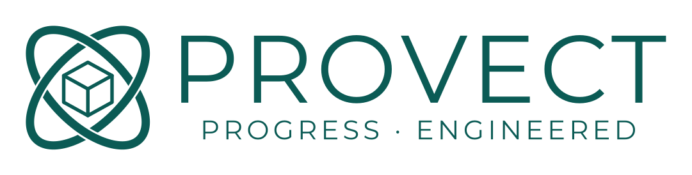
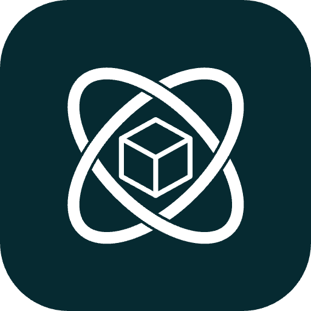
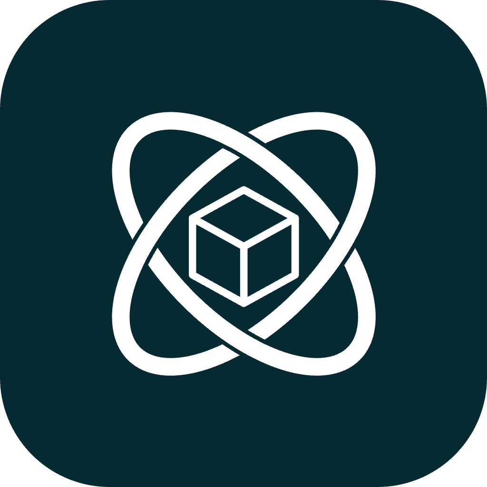
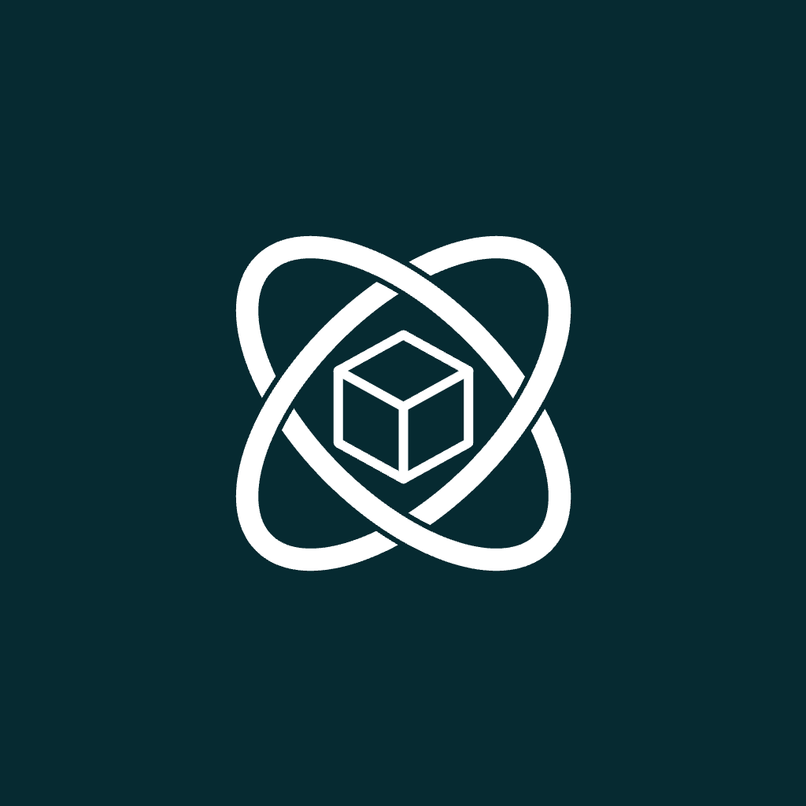
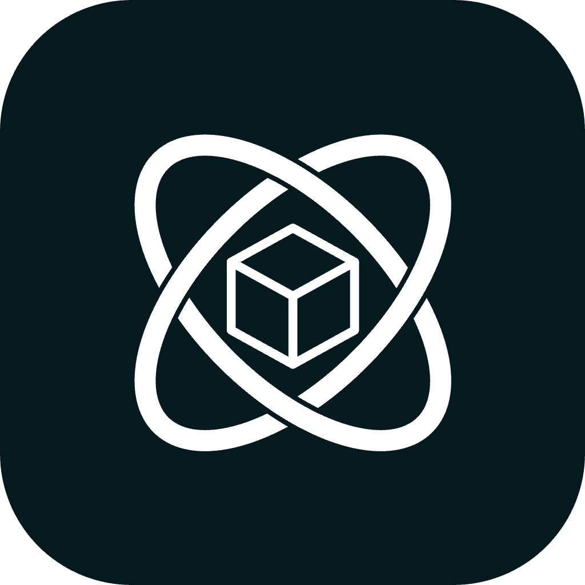
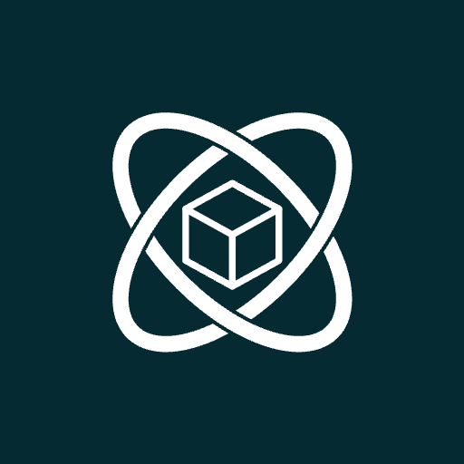

The PROVECT logo pairs an orbiting-atom mark with a light, wide-tracked wordmark. The mark signals intelligent systems in motion; the cube at its center, the product being built. Never redraw, restretch, or re-typeset either element.

Choose the version that holds the most contrast against its background. Primary teal on light, reversed white on brand or petrol, single-ink where color can't print.
Keep a margin of at least the mark's height (×) clear on every side. Never place type, edges, or other logos inside this zone.
Provect Teal is the primary; Provect Petrol is the dark surface behind icons and hero moments. Electric Aqua is the accent for interactive energy. Slate neutrals carry everything else.
Space Grotesk sets display and headings — geometric and confident. Public Sans carries body copy and interface text — neutral and highly legible at every size.
The mark reversed in white on a deep petrol tile for maximum contrast at small sizes. Corners round for web/app tiles; keep the full-bleed square for iOS and the padded safe-area version for Android maskable icons.




Profile avatar centers the mark on petrol so it survives circular cropping. The banner keeps the logo left, with the mark ghosted at the right edge.
